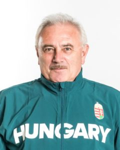
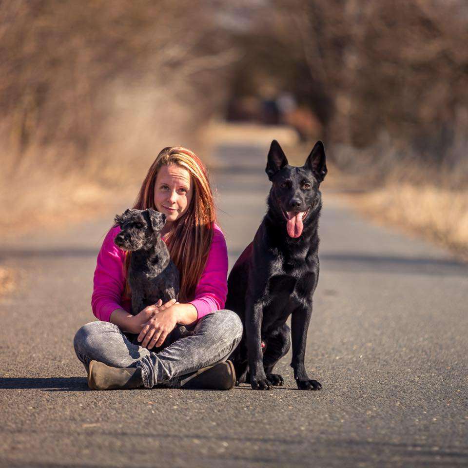
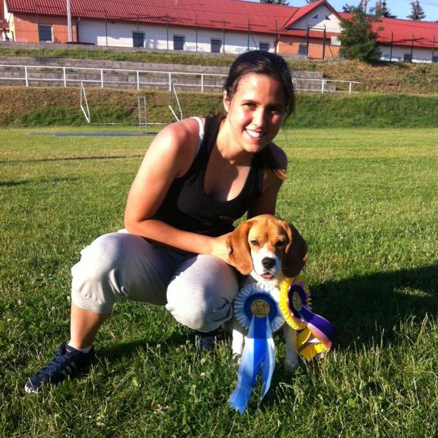
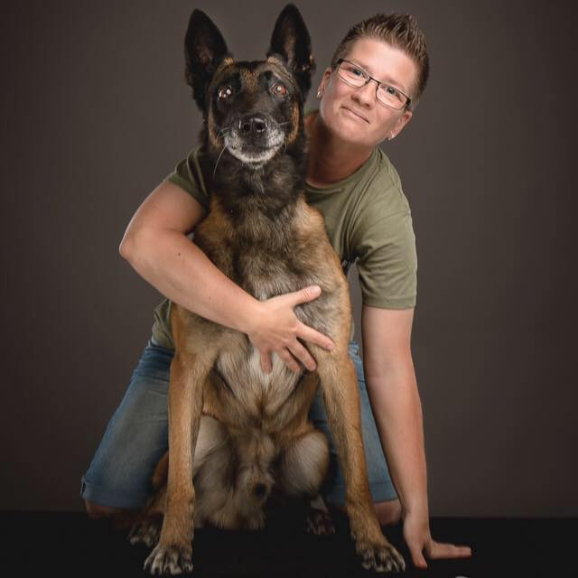
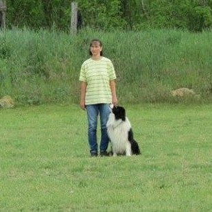
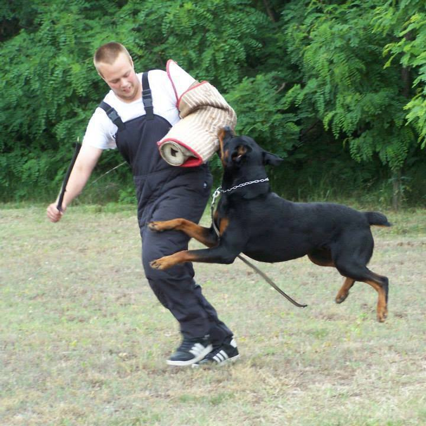

Juhász József aranykoszorús mesterkiképző
 "Munkáját mindig igényesen végezte, amíg a kutyaiskolámban oktatott. A csoportok örömmel várták őt és a pozitív hozzáállása a legelesettebb és elkeseredettebb gazdiknak is reményt adott. Jókedélyű, ugyanakkor ha kell következetes és tisztelik. A csoportok elé mindig magabiztosan állt ki, érthetően magyaráz és odafigyel az egyéni problémákra is. Remélem mihamarabb visszatér a csapatba és újra vállal csoportot amint ideje engedi."
Szöllősi Brigitta Akela kutyaiskola kiképző
"Számtalan közös munkán vagyunk túl és azt kell mondanom a szakmai hozzáértése és tapasztalata megkérdőjelezhetetlen. A bonyolult eseteket is higadtan kezelte és eredendő türelemmel áll a problémás kutyákhoz is. Háttértudása kifogásolhatatlan, ugyanakkor nincs elszállva magától, tudja hogy még mennyi mindent kell megtanulnia ha igazán profi szeretne lenni abban amit csinál.
Fülöp Franciska PKKI kutyakiképző
"Együtt oktattunk annak idején a Pestlőrinci Kutyakiképző Iskolában (PKKI) és nagyon jó barátok is lettünk, mert vele könnyű annak lenni. Mosolygós, pozitív személyiség aki érti a kutyák minden rezdülését. Erre egy személyes példával élnék, mikor az én mindent is megevő beagle kutyámat mmegtanította hogy várja ki az étkezés végét, ne kunyeráljon az asztalnál, a végén akkor fog kapni. Pedig én addigra már feladtam, de ő kihozta belőe a legjobbat!"
Renkó Zsuzsanna MVGYOSZ vakvezető kutyakiképző
"Olivkát nagyon jó kiképzőnek tartom, pedig 30 éve kutyázom, és kevés emberre mondhatom ezt. Többször járt kint nálunk a vakvezető kutyaiskolán segédkezni a képzésben, és ezen a területen is megállta a helyét. Csak ajánlani tudom."
Baksa Angéla Ágnes kutyakozmetikus
"A kutyakozmetikában rendszeresen vannak problémás, antiszociális kutyák, akiket segítség nélkül nem tudok megnyírni, megfürdetni. Ilyenkor telefonálok Neki, és amint tud jön és segít, vagy ha esetleg ideje nem engedi, telefonon nyújt nagyin hasznos tanácsokat. Mindenkienk ajánlom őt, a kutya fajtájától és méretétől függetlenül."
Dámsáné Mónika ezüstkoszorús mesterkiképző
"Nálam kezdte a pályafutását, én voltam az első oktatója. Nagyon jó látni, hogy ennyi év után is alázattal és türelemmel fordul minden tanítványához, és mindig új és kreatív ötletei vannak arra, mire lehetne még megtanítani egy kutyát, hiszen ő is tudja, a fáradt kutya jó kutya. Nem csak fizikálisan, de mentálisan is le tudja fárasztani az adott tanulót, ami nagyon fontos a nyugodt együttéléshez gazda és kutya közt."
Brabander Richárd őrző-védő segéd
 "Rendszeresen sportolunk együtt, és nem is tudok rosszat mondani róla. Kitartó, türelmes és mlrhetetlen sok pozitív energiával rendelkezik. A kutyák képzésekor ez kulcsfontosságú, mert ők rögtön megérzik az energiákat és visszatükrözik mindazt amit mi rájuk zúdítunk. Olívia ezel tisztában van, és ezáltal az egyik legjbb kiképző, akit ismerek."